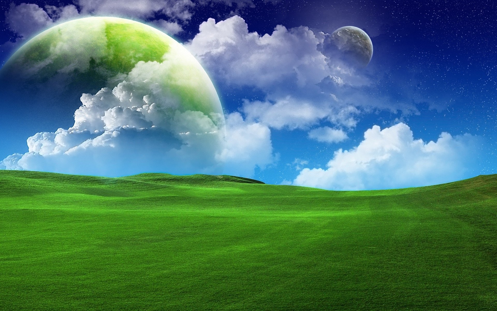

Planet X2
This was the first planet that I teleported to on my journey across space. This planet was like earth, but it was floating in a giant sphere of water. I was suprised that I could breathe so easily consdiering that I am not a fish. The locals say once the ruler of the planet X1 passed along to space heaven, he shed a single tear and it burst in the middle of space creating X2. The more time that I spent on this planet the more I felt his presence. It was almost as if the planet was alive.
FUN FACT: I had a fish named X2.
NOT SO FUN FACT: He is burried in my backyard. Seriously... with a tomb stone and everything... R.I.P X2✝︎
Black Hole
As I was teleporting from X2, I got interupted by a black hole midway to my next destination. It seemed like a huge inconvience at the time, but once I accepted the situation I was in. It turned out to be a beautiful experience. I was slowly being sucked into another dimension in bliss. I had never experienced cross dimension space travel so I was pretty excited to see where I would be taken. As I entered the void, I was shown my entire life in the matter of seconds and in an instant I was falling out of the other side onto the planet Yorha.
FUN FACT: I am the first person in history to travel through a black hole
Planet Yorha
Like a meteor, I crash landed in a burst of flames and debris into Yorha. Once I was able to see straight again, I looked around and realized that everything was made of metal! This was not an organic planet, but a robot made planet. All the inhabitants on this planet were beeping and booping all over the place. I was basically a ghost floating around town because no one paid any mind to me. All the robots were busy carrying out tasks. I wasn't too sure what they were all working on until I noticed an engraved branding on all of the robots. It was some sort of nuclear symbol. What could this be? Yorha answered that for me very quickly. In the distance, a giant mushroom cloud appeared and then a massive shock wave knocked me through 7 factories and sent me soaring to the next planet. I guess they were making nukes and I was there for their worst day at work.
FUN FACT: I have grown a 6th finger on my right hand due to the raditation
Planet XP
This time when I flew onto another planet I was able to land on both feet. This planet was very empty. It was green fields and blue skys forever and ever without a single sign of life besides the grass on the ground. The lack of noise was both creepy and peaceful at the same time. It felt like I was in a dream, but instead of counting sheep I was counting spaceships passing by. I wondered for hours on this planet, skipping around and listening to happy music. I ended up stumbling upon an escalator that lead to the planet that was right next to XP. I stepped on and let the steps carry me to my next destination. It was a long ride so I ended up falling asleep when I was about a few hours away from my destination. The next time I opened my eyes I was floating away from XP on a fragment of the escalator. I looked down at XP and saw a fox with a chainsaw waving at me. I just went back to bed.
FUN FACT: It is always day time on XP and the surrounding planets. Scientists say it's because the stars in its solar system shine together as bright as the sun.
Planet B901
I was disrupted from my sleep when I crash landed yet again onto another planet. This time I crashed onto the planet B901. Everything looked very apocolyptic and destroyed. As I was looking at my surroundings I saw some rusty cars with turrets and rocket launchers strapped to them fighting each other. I took cover behind the piece of the escalator that I was riding on and watched the two opposing sides fight it out. One of the cars shot a rocket at the other and it launched the car in the air and landed upside down. The driver was crawling out, shouting something about gasoline. The driver that launched the car got out of his car and started siphoning the last bit of gasoline from the destroyed car and began to consume the gasoline at an alarming rate. The flipped car exploded leaving both of the drivers horribly injured. I knew then and there that I had to leave this planet as soon as possible, but how? I looked around the desert scape for anything that could help me in any way to escape. I noticed a red button on the side of the escalator so I pressed it. It transformed into a giant UFO! I had no time to question it so I just got on and left.
FUN FACT: The "residents" of this planet live off of gasoline and silver spray paint
The Unknown Planet
I flew away from B901 for a few hours just to make sure there was no sign of that planet anywhere near me. As I was flying I came across this planet that I think has never been discovered before me. It looked somewhat like a giant eyeball. I was very intrigued so I landed. I stepped out of the UFO and at first sight I felt like I was in paradise. It was so beautiful and rich with life, but no sign of any intelignet life forms. It seemed too good to be true. I took this opportunity to switch up my living situation. The UFO came with a G.E.C.K. which stands for Garden Of Eden Creation Kit. Laying this device out in an open area would allow the land to be populated with all the resources I needed to start creating my own home and food to live. I'm actually writing this paragraph in my newly built shack. It is very peaceful. I'm still not sure what I want to name this planet. Earth < The Unknown Planet.
FUN FACT: I made friends with this funny looking animal and now he lives in my house.